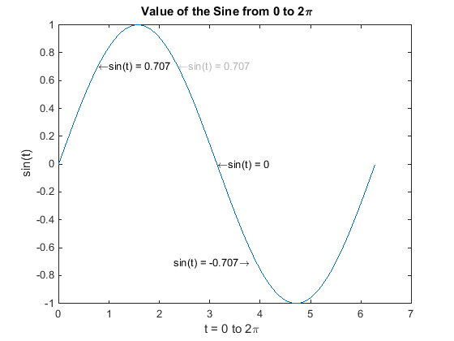
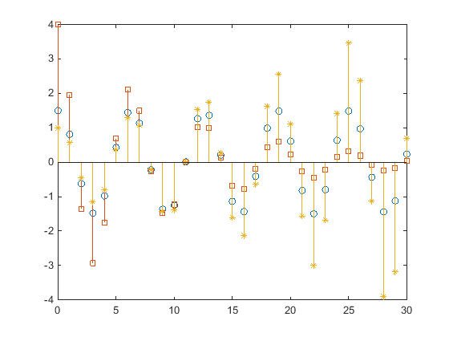
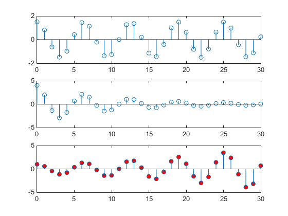

Find Objects
Find Objects with Specific Property Values
The findobj function
can scan the object hierarchy to obtain the handles of objects that
have specific property values.
For identification, all graphics objects have a Tag property that you can
set to any character vector. You can then search for the specific property/value
pair. For example, suppose that you create a check box that is sometimes inactivated
in the UI. By assigning a unique value for the Tag property, you
can find that particular
object:
uicontrol('Style','checkbox','Tag','save option')
Use findobj to locate the object whose Tag property is
set to 'save option' and disable
it:
hCheckbox = findobj('Tag','save option'); hCheckbox.Enable = 'off'
If you do not specify a starting object, findobj searches
from the root object, finding all occurrences of the property name/property
value combination that you specify.
To find objects with hidden handles, use findall.
Find Text by String Property
This example shows how to find text objects using the String property.
The following graph contains text objects labeling particular values of the function.

Suppose that you want to move the text labeling the value sin(t) = .707
from its current location at [pi/4,sin(pi/4)] to
the point [3*pi/4,sin(3*pi/4)] where the function
has the same value (shown in light gray out in the graph).
Determine the handle of the text object labeling the point [pi/4,sin(pi/4)] and
change its Position property.
To use findobj, pick a property value that uniquely identifies the object.
This example uses the text String property:
hText = findobj('String','\leftarrowsin(t) = .707');
Move the object to the new position, defining the text Position in
axes units.
hText.Position = [3*pi/4,sin(3*pi/4),0];
findobj lets you restrict the search by specifying
a starting point in the hierarchy, instead of beginning with the root
object. If there are many objects in the object tree, this capability
results in faster searches. In the previous example, you know that
the text object of interest is in the current axes, so you can type:
hText = findobj(gca,'String','\leftarrowsin(t) = .707');
Use Regular Expressions with findobj
This example shows how to find object handles using regular
expressions to identify specific property values. For more information
about regular expressions, see regexp.
Suppose that you create the following graph and want to modify certain properties of the objects created.
x = 0:30; y = [1.5*cos(x);4*exp(-.1*x).*cos(x);exp(.05*x).*cos(x)]'; h = stem(x,y); h(1).Marker = 'o'; h(1).Tag = 'Decaying Exponential'; h(2).Marker = 'square'; h(2).Tag = 'Growing Exponential'; h(3).Marker = '*'; h(3).Tag = 'Steady State';

Passing a regular expression to findobj enables
you to match specific patterns. For example, suppose that you want
to set the value of the MarkerFaceColor property
to green on all stem objects that do not have
their Tag property set to 'Steady State' (that
is, stems that represent decaying and growing exponentials).
hStems = findobj('-regexp','Tag','^(?!Steady State$).'); for k = 1:length(hStems) hStems(k).MarkerFaceColor = 'green' end
Limit Scope of Search
Specify the starting point in the object tree to limit the scope of the search. The starting point can be the handle of a figure, axes, or a group of object handles.
For example, suppose that you want to change the marker face color of the stems in a specific axes:
x = 0:30; y = [1.5*cos(x);4*exp(-.1*x).*cos(x);exp(.05*x).*cos(x)]'; tiledlayout(3,1) ax1 = nexttile; stem(x,y(:,1)) ax2 = nexttile; stem(x,y(:,2)) ax3 = nexttile; stem(x,y(:,3))
Set the marker face color of the stems in the third axes only.
h = findobj(ax3,'Type','stem'); h.MarkerFaceColor = 'red';

For more information on limiting the scope and depth of an object
search, see findobj and findall.